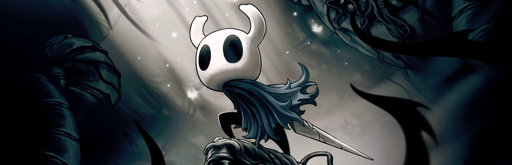
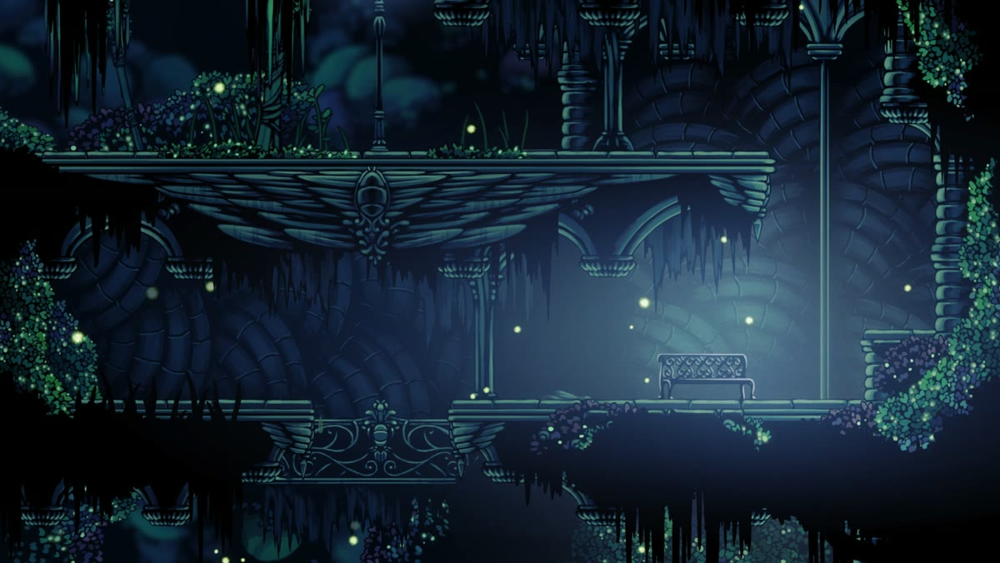
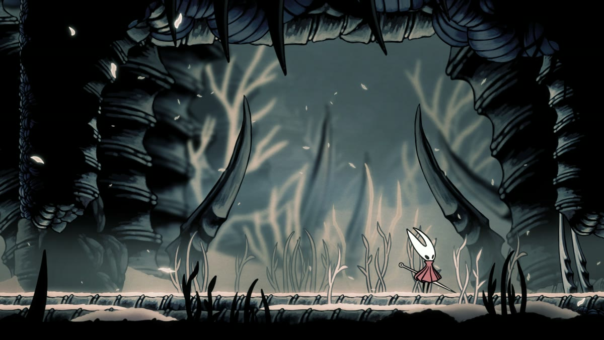
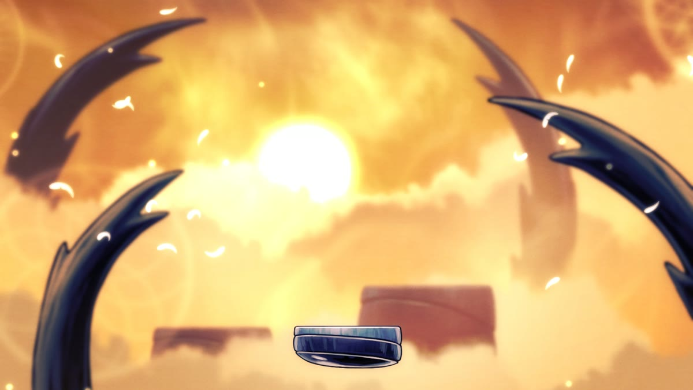

Hollow Knight
Hallownest

Sobre el juego
Hollow Knight es un videojuego de plataformas y exploración creado por el estudio independiente Team Cherry y lanzado en 2017. Juegas como el Caballero, una pequeña criatura de ojos vacíos que desciende a las profundidades del reino de Hallownest para descubrir qué ocurrió con su pueblo y con el Rey Blanco.
Su arte dibujado a mano, su música envolvente y su gran dificultad lo han convertido en un clásico de los metroidvania.
Datos rápidos
- Género: Metroidvania / Plataformas
- Estudio: Team Cherry
- Lanzamiento: 2017
- Plataformas: PC, PlayStation, Xbox y Switch
Galería


